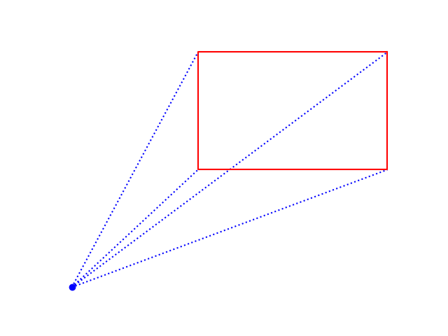

Functions Exercises and Solutions#
Question-1: Harmonic Mean#
Write a function that takes three numbers as parameters and returns the harmonic mean of these numbers using the formula: \(\displaystyle H(x, y, z) = \frac{3}{\frac{1}{x}+\frac{1}{y}+\frac{1}{z}}\).
def harmonic_mean(x, y, z):
return 3/(1/x+1/y+1/z)
Question-2: Circle#
Write a function that takes two parameters: radius (\(r\)) with a default value of 1, and calculation_type with a default value of “area”.
If calculation_type is area (\(\pi r^2\)) the function returns the area of the circle, rounded to the nearest hundredth.
If calculation_type is perimeter(\(2\pi r\)) the function returns the perimeter of the circle, rounded to the nearest hundredth.
If calculation_type is both the function returns a tuple containing both the perimeter and the area of the circle, each rounded to the nearest hundredth.
If calculation_type is anything else, it prints a “not valid type” warning.
import math
def circle(r=1, calculation_type='area'):
A = round(math.pi*(r**2),2)
P = round(2*math.pi*r,2)
if type == 'area':
return A
elif type == 'perimeter':
return P
elif type == 'both':
return P, A
else:
print('Not valid type.')
Question-3: Algebraic Operations#
Write a function that takes two numbers as parameters and returns the results of the four basic operations.
If the second number is zero for division, print a warning message about division by zero.
Round the result of the division to the nearest hundredth.
Sample Output: alg_operation(3,7)
3 + 7 = 10
3 - 7 = -4
3 x 7 = 21
3 / 7 = 0.43
def alg_operation(x,y):
print(f'{x} + {y} = {x+y}')
print(f'{x} - {y} = {x-y}')
print(f'{x} x {y} = {x*y}')
if y != 0:
print(f'{x} / {y} = {x/y:.2}')
else:
print('Warning: Zero Division')
alg_operation(3,7)
Question-4: Letters#
Write a function that takes a number as its input and returns the first corresponding number of lowercase letters from the alphabet.
If the input number exceeds the total number of letters in the alphabet, the function returns all letters.
If the input is zero or negative, it returns an empty string.
Sample Output
print(letter_func(4))
abcd
print(letter_func(-5))
(No Output)
print(letter_func(40))
abcdefghijklmnopqrstuvwxyz
import string
def letter_func(n):
letters = string.ascii_lowercase
if n >= len(letters):
return letters
elif n<=0:
return ''
else:
return letters[:n]
print(letter_func(4))
print(letter_func(-5))
print(letter_func(40))
Question-5: Distance#
Write a function that takes four parameters: the (x, y) coordinates of two points, A and B.
Plot a red line connecting these two points on a graph.
Label points A and B by adding texts next to each point.
Calculate the distance between these points and display it as text in the middle of the line.
Rotate the text for better visibility.
Sample Output
import matplotlib.pyplot as plt
import numpy as np
def plot_func(x1,y1,x2,y2):
plt.plot([x1,x2], [y1,y2], c='r', marker='o')
dist = np.sqrt((x2-x1)**2+(y2-y1)**2)
plt.text((x1+x2)/2, (y1+y2)/2+0.1, round(dist,2), rotation=30)
plt.savefig('pict/plot_dist.png')
plot_func(1,2,10,4)
Question-6: Password Check#
Select a 4-digit password. Then, write a function that takes a 4-digit number as its parameter.
If the provided number is within 10 units of the chosen password, the function should print a message granting permission to enter; otherwise, it should print a message denying entrance.
Sample Output
password_check(1234)
DENY!
password_check(4325)
ACCEPT!
import random
password = random.randint(1000, 9999)
password=4325
def password_check(number):
if abs(password - number) < 10:
print('ACCEPT!')
else:
print('DENY!')
password_check(1234)
password_check(4325)
Question-7: Random Points#
Write a function that takes a parameter representing the number of points to plot in green.
This function should generate random points, each with random sizes and transparencies, and plot them on a graph.
The sizes of the points should be integers ranging from 5 to 800.
The transparencies should be decimal numbers between 0 and 1.
The x and y coordinates of the points should be decimal numbers ranging from 5 to 10.
Sample Output

import random
import matplotlib.pyplot as plt
def rand_point(n):
sizes = [random.randint(5, 800) for i in range(n)]
alphas = [random.random() for i in range(n)]
x_values = [random.uniform(5,10) for i in range(n)]
y_values = [random.uniform(5,10) for i in range(n)]
for i in range(n):
plt.scatter(x_values[i], y_values[i], c='g', s=sizes[i], alpha=alphas[i])
plt.savefig('pict/plot_rand_points.png')
rand_point(100)
Question-8: Pyramid#
Write a function that takes five parameters representing:
The x-coordinate of the right upper corner of the rectangle.
The y-coordinate of the right upper corner of the rectangle.
The width of the rectangle.
The length of the rectangle.
The color of the rectangle.
The function should:
Plot the corresponding rectangle.
Plot the point (0,0) in blue color.
Draw four dotted blue lines from the point (0,0) to each corner of the rectangle.
Remove the axis.
Sample plot:

import matplotlib.pyplot as plt
def rect(xr, yr, width, length, color):
plt.scatter(0, 0, c='b')
plt.plot([0, xr-width], [0, yr-length] , linestyle='dotted', c='b')
plt.plot([0, xr-width], [0, yr] , linestyle='dotted', c='b')
plt.plot([0, xr], [0, yr-length] , linestyle='dotted', c='b')
plt.plot([0, xr], [0, yr] , linestyle='dotted', c='b')
plt.plot([xr, xr-width, xr-width, xr, xr], [yr, yr, yr-length, yr-length, yr], c=color)
plt.axis('off')
rect(5,8,3,4,'r')
plt.savefig('pict/func_pyramid.png')

Question-9: Equation of a Line#
Write a function that takes four parameters representing:
The x-coordinate of the first point.
The y-coordinate of the first point.
The x-coordinate of the second point.
The y-coordinate of the second point.
The function should return the equation of the line that passes through these two points using the slope-intercept form \(y=mx+b\) , where:
\(m\) is the slope, calculated as \(m=\frac{y_2-y_1}{x_2-x1}\)
\(b\) is the y-intercept, calculated as \(b = y_2 - mx_2\).
Warning: If \(x_2=x_1\) , the equation of the line is \(x=x_2\).
def linear_equ(x1, y1, x2, y2):
if x2 != x1:
m = (y2-y1)/(x2-x1)
b = y2-m*x2
if y1 == y2:
print(f'y = {b}')
else:
print(f'y = {m}x+{b}')
else:
print(f'x = {x1}')
linear_equ(2,3,10,5)
y = 0.25x+2.5
Question-10: Pitch Monitor#
Write a function that takes a list of whole numbers representing pitches and visualize the pitches, using the print() function and * characters.
The length of the pitch list is the number of
*columns.The numbers in the list represent the number of
*characters in each column.For example, if pitch_list = [2, 5, 3, 4], then:
The first column has 2 stars.
The second column has 5 stars.
The third column has 3 stars.
The fourth column has 4 stars.
Sample Output for pitch_list = [2,5,3,4]:
pitches_list = [2,5,3,4]
pitches_list2 = pitches_list.copy()
for i in range(max(pitches_list)):
maximum = max(pitches_list2)
print_list = []
for j in range(len(pitches_list2)):
if pitches_list2[j] == maximum:
print('* ', end='')
pitches_list2[j] -= 1
else:
print(' ', end='')
print()
*
* *
* * *
* * * *
* * * *
Business Application#
Question: Simple Interest#
Write a function that takes the principal amount, annual interest rate, and time period in years as parameters and returns the interest amount and final amount as a tuple.
The annual interest rate is in decimal form.
def simple_interest(P, r, t):
interest = P*r*t
return interest, interest+P
simple_interest(100, 0.20, 3)
(60.0, 160.0)
Question: Cost#
Total cost (C) has two parts:
Variable Costs: Expense that changes in proportion to number of items produced.
Variable Cost = Number of items produced \(\cdot\) Cost of producing one item
Fixed Costs: Does not depend on the number of the items produced.
Examples: rent, lease costs, salaries, utility bills, insurance
It costs a company 80 dollars to produce one item, and the company has fixed costs of 850 dollars and \(n\) represents the number of items produced.
Write a function which has the paramter \(n\) and returns the total cost.
Find the cost of producing 6 items.
def cost(n):
return 80*n+850
print(cost(6))
Question: Linear Depreciation#
The value of a new machine is \(100,000\) dollars and its values is depreciated by \(7500\) dollars per year.
Write a function which has only one parameter \(t\) that represents the year and returns the value of the machine after \(t\) years.
Find the value of the machine after 6 years.
def value(t):
return 100_000 - 7500*t
print(value(6))
Question: Exponential Depreciation#
The value \(V\) of a truck in dollars is given by the formula \(V(t)=140000(1.35)^{-0.6t}\) where \(t\) is the age of the truck in years.
Write a function which has only one parameter \(t\) that represents the year and returns the value of the truck after \(t\) years.
Find the value of the truck after 6 years.
Plot the graph of values of the truck in 30 years.
def value(t):
return 140000*(1.35**(-0.6*t))
print(value(6))
def value(t):
return 140000*(1.35**(-0.6*t))
print(value(6))
import matplotlib.pyplot as plt
for t in range(31):
plt.scatter(t, value(t), c='r')
47525.47531955799

Question: Plumber Charge#
A plumber charges a fixed fee of 150 dollars if the working time does not exceed 2 hours. If it exceeds 2 hours, he charges an extra 80 dollars for each additional hour. Write a function that takes one parameter, hours, and calculates the total cost based on the hours provided.
def plumber(hours):
if hours <= 2:
return 150
else:
return 150 + (hours-2)*80
Question: Monthly Plan#
A gym company offers two plans: Basic and Professional. The details for each plan are as follows:
Basic Plan:
Fixed fee: 5 dollars
Cost per hour: 5 cents
Professional Plan:
Fixed fee: 10 dollars
Cost per hour: 6 cents
Write a function that takes two parameters, plan (either “Basic” or “Professional”) and hours, and calculates the total cost based on the plan and hours provided.
def gym_cost(plan, hours):
if plan == 'Basic':
return 5 + hours*0.05
else:
return 10 + hours*0.06